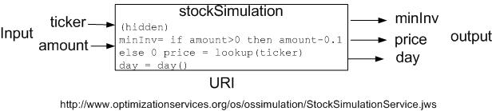

|
Optimization Services nonlinear Language (OSnL)
Click to see or download the OSnL XML Schema -> OSnL.xsd [stable]
OSnL (nonlinear) contains definitions of all the nonlinear, combinatorial, and other nodes (e.g. operators, operands, etc.) used in other OSxL's, mainly OSiL.
In keeping with the philosophy of separating out the linear and nonlinear parts of an optimization instance, the nonlinear expressions in an instance are defined using the OSnL schema. OSnL itself is not a nonlinear program instance representation. Remember, all types of optimization instances are described using OSiL. More appropriately OSnL should be interpreted as Optimization Services nonlinear node Language. OSnL defines nonlinear nodes and nodes only. The nodes can be operators, functions or terminal operands. Operators always have child nodes. Function may or may not have child nodes. Terminal operands do not have children. Examples of terminal nodes are the number node and constant nodes such as PI and E.
OSnL is then included in the OSiL schema to support nonlinear instance representation in OSiL. The way OSiL uses OSnL is through the use of a sequence of 0 or more <nl>; each <nl> element has an only child OSnLNode as an expression tree root to define a nonlinear function. This is described in detail in the OSiL paper.
For a nonlinear expression, we use an expression tree and view every node in the expression tree as a generic node, which we call “OSnLNode.” Each OSnLNode can have 0 or more OSnLNode children. A terminal node is just an OSnLNode without children. To represent a generic node, at the beginning of the OSnL schema, we create a complex type OSnLNode:
<xs:complexType name="OSnLNode" mixed="false">
<xs:annotation>
<xs:documentation>This is a generic node from which we derive operator nodes</xs:documentation>
</xs:annotation>
</xs:complexType>
The annotation element is just an XML schema comment. Next we create a substitution group based on the named element OSnLNode, which is of the above type OSnLNode.
<xs:element name="OSnLNode" type="OSnLNode" abstract="true">
<xs:annotation>
<xs:documentation> Set abstract to true in order to create a substitution group</xs:documentation>
</xs:annotation>
</xs:element>
So we can think of OSnLNode as a derived class. Note the abstract attribute is set to the value of true in order to create the abstract class. Now with the substitution group defined, throughout the rest of the OSnL schema, we create concrete OSnLNode elements that are in the substitution group for OSnLNode. For example, the first concrete element we define is an OSnLNode for addition:
<xs:complexType name="OSnLNodePlus">
<xs:complexContent>
<xs:extension base="OSnLNode">
<xs:sequence minOccurs="2" maxOccurs="2">
<xs:element ref="OSnLNode"/>
</xs:sequence>
</xs:extension>
</xs:complexContent>
</xs:complexType>
<xs:element name="plus" type="OSnLNodePlus" substitutionGroup="OSnLNode"/>
We first define the complex type OSnLNodePlus and we then create the derived element plus that is in the substitution group OSnLNode. Note that the plus element requires exactly two child elements (<xs:sequence minOccurs="2" maxOccurs="2">), both of which should be in the OSnLNode substitution group too (<xs:element ref="OSnLNode"/>). In a similar fashion, we define all other OSnL nodes such as minus, divide, arcsin, sum, E, var, leq, if, complements, xPath, userF, quadratic. For nodes such as sum, as the sum operator is an indefinite type, the corresponding OSnLNodeSum requires one or more child elements:
<xs:complexType name="OSnLNodeSum">
<xs:complexContent>
<xs:extension base="OSnLNode">
<xs:sequence minOccurs="1" maxOccurs="unbounded">
<xs:element ref="OSnLNode"/>
</xs:sequence>
</xs:extension>
</xs:complexContent>
</xs:complexType>
<xs:element name="sum" type="OSnLNodeSum" substitutionGroup="OSnLNode"/>
For nodes such as E, as E is a constant, the corresponding OSnLNodeE has no children:
<xs:complexType name="OSnLNodeE">
<xs:complexContent>
<xs:extension base="OSnLNode"/>
</xs:complexContent>
</xs:complexType>
<xs:element name="E" type="OSnLNodeE" substitutionGroup="OSnLNode"/>
The recursive design provides a significantly simple and powerful way to construct a nonlinear expression.
When a concrete expression tree is finally constructed, it may look like:
<sum>
<times>
<var idx="0" coef="3"/>
<var idx="1"/>
</times>
<power>
<var idx="0" coef="4"/>
<number value="2"/>
</power>
<divide>
</PI>
<var idx="0"/>
</divide>
</sum>
for the nonlinear expression.
The OSnL schema is very compressive; over 200 elements are supported. They fall broadly into the following 8 categories:
- Arithmetic operators
- Elementary functions
- Trigonometric functions
- Statistical and probability functions
- Terminals and constants
- Optimization related elements
- Logic and relational operators
- Special elements
1. Arithmetic operators
In the following table, we list the arithmetic operator elements.
Name |
Child # |
Note |
|
Name |
Child # |
Note |
plus |
2 |
+ |
divide |
2 |
/ |
sum |
1 or more |
|
quotient |
2 |
\; e.g. 11 quotient 4 = 2 |
minus |
2 |
- |
rem |
2 |
remainder, e.g. 11 rem 4 = 3 |
negate |
1 |
(-) |
power |
2 |
^ ; base is the 1st child; exponent is the 2nd child |
times |
2 |
* |
product |
1 or more |
|
“Child #” indicates the number of OSnLNode children that an element can take as operands. Elements with 1 operand are of unary type. Elements with 2 operands are of binary type. Elments with n (n>2) operands are of n-nary type. Some of the subsequent element types have n-nary functions. Elements such as sum and product are of indefinite types. As useful as the validation concept is, validation is about syntax not semantics. For example, the OSnL schema can make sure there are exactly 2 child elements for the <divide> element, but the schema cannot make sure the second child evaluates to a non-zero. Similarly the schema does not check whether the child elements of the integer-based quotient and rem operators evaluate to integers. These require additional checking and interpretation on the part of a parser.
2. Elementary functions
In the following table, we list the elementary function elements.
Name |
Child # |
Note |
|
Name |
Child # |
Note |
abs |
1 |
|
ln |
1 |
natural log of a |
squareRoot |
1 |
|
log |
2 |
log (a, b) = |
square |
1 |
|
log10 |
1 |
log10(a) = |
floor |
1 |
|
round* |
2 |
see blow |
ceiling |
1 |
|
roundToInt |
1 |
round to integer |
factorial |
1 |
 |
gcd |
2 |
greatest common divisor |
exp |
1 |
|
lcm |
2 |
least common multiple |
combination |
2 |

|
|
truncate* |
2 |
see below |
permutation |
2 |
|
|
rand* |
1 |
see below |
percent |
1 |
|
|
gammaFn |
1 |
gamma function |
sign |
1 |
1 or -1 |
|
gammaLn |
1 |
natural log of the gamma function |
Most of the elementary functions are self-explanatory.
The round function takes 2 children. The first child is the number to be rounded. The second child is the number of digits to round; a negative number rounds to the left of the decimal point; zero to the nearest integer.
The truncate function truncates a number to an integer by removing the fractional part of the number. It takes 2 children. The first child is the number to be truncated. The second child indicates truncation precision; negative number truncates to the left of the decimal point; zero to the nearest integer.
The rand function takes 1 child as a seed. It returns a random number from a continuous uniform distribution and .
3. Trigonometric functions
All the 24 standard trigonometric functions are defined in OSnL.
Name |
|
Name |
|
Name |
|
Name |
|
Name |
|
Name |
sin |
cos |
tan |
cot |
sec |
csc |
sinh |
cosh |
tanh |
coth |
sech |
csch |
arcsin |
arccos |
arctan |
arccot |
arcsec |
arccsc |
arcsinh |
arccosh |
arctanh |
arccoth |
arcsech |
arccsch |
A trigonometric function takes one and only one child.
4. Statistical and probability functions
In the following table, we list the statistical function elements that take one list of data, and hence are of indefinite types.
Name (no notes) |
|
Name |
Note |
mean |
Absdev |
average of absolution deviations from the mean |
geometricMean |
Stddev |
standard deviation |
harmonicMean |
Cv |
coefficient of variance (standard deviation / mean) |
count |
Large |
the nth largest number in a data list; n (>0) is the 1st child |
median |
Small |
the nth smallest number in a data list; n (>0) is the 1st child |
mode |
Percentile |
the nth percentile in a data list; n is the 1st child |
min |
interQuantileRange |
thirdQuartile - firstQuartile |
max |
Range |
max - min |
skewness |
trimMean* |
see below; fractional value is the 1st child |
kurtosis |
Npv |
net present value; discount rate r is the 1st child |
firstQuartile |
Irr |
internal rate of return |
thirdQuartile |
autocorrelation1 |
regular autocorrelation with lag = 1 |
variance |
autocorrelation |
general correlation with lag = n; n is the 1st child |
Each entry in the data list corresponds to a child node. The parameters (if any) of a statistical function go before the data list children. For example the large function takes a number n as its first child to indicate the nth largest number in the rest of the children. Most of the statistical functions are self-explanatory.
The trimMean function takes 2 or more children. The first child is a number () indicating the fraction of data points to exclude from the top and bottom of the data list. The rest of the children (from the second on) are the data list.
In the following table, we list the statistical function elements that take two data lists as operands.
Name |
Note |
covariance |
covariance of two data lists; 1st data list is the 1st half of the children |
correlation |
correlation of two data lists; 1st data list is the 1st half of the children |
pearsonCorrelation |
Pearson product moment correlation coefficient; 1st data list is the 1st half of the children |
rankCorrelation |
rank correlation of two data lists; 1st data list is the 1st half of the children |
Each entry in the 2 data lists corresponds to a child node. The parameters (if any) of a statistical function go before the data list children. After the parameter children, there should be even number of the rest of the children; the first half of these children corresponds to the first data list; the second half of these children corresponds to the second data list.
In the following table, we list the probability function elements. Almost all probability functions can have three versions: density, cumulative, and inverse; child arguments for the three versions are exactly the same. An OSnL element is created for each version (if there is one). Density type elements are suffixed with “Dist”, cumulative type elements are suffixed with “Cum”, and inverse type elements are suffixed with “Inv.”
Name
(Density) |
Name
(Cumulative) |
Name
(Inverse) |
Child # |
Sequence of Children
(param1, ..., param2, x) |
discreteUniformDist |
discreteUniformCum |
discreteUniformInv |
2 |
(N, x) |
bernoulliDist |
bernoulliCum |
bernoulliInv |
2 |
(p, x) |
binomialDist |
binomialCum |
binomialInv |
3 |
(N, p, x) |
multinomialDist |
multinomialCum |
multinomialInv |
3 or more |
(N, p1, p2,..., pn, x) |
hypergeometricDist |
hypergeometricCum |
hypergeometricInv |
4 |
(N, M, n, x) |
poissonDist |
poissonCum |
poissonInv |
2 |
(lamda, x) |
geometricDist |
geometricCum |
geometricInv |
2 |
(p, x) |
negativeBinomialDist |
negativeBinomialCum |
negativeBinomialInv |
3 |
(p, r, x) |
uniformDist |
uniformCum |
uniformInv |
3 |
(a, b, x) |
normalDist |
normalCum |
normalInv |
3 |
(mu, sigma, x) |
stdNormalDist |
stdNormalCum |
stdNormalInv |
1 |
(x) |
bivariateNormalDist |
bivariateNormalCum |
/ |
7 |
(mu1, sigma1, mu2, sigma2, pho, x1, x2) |
exponentialDist |
exponentialCum |
exponentialInv |
2 |
(lamda, x) |
weibullDist |
weibullCum |
weibullInv |
4 |
(location, scale, shape, x) |
erlangDist |
erlangCum |
erlangInv |
3 |
(lamda, n, x) |
gammaDist |
gammaCum |
gammaInv |
4 |
(location, scale, shape, x) |
betaDist |
betaCum |
betaInv |
3 |
(degree1, degree2,x) |
betaGeneralDist |
betaGeneralCum |
betaGeneralInv |
5 |
(degree1, degree2, min, max, x) |
lognormalDist |
lognormalCum |
lognormalInv |
3 |
(mu, sigma, x) |
cauchyDist |
cauchyCum |
cauchyInv |
3 |
(location, scale, x) |
tDist |
tCum |
tInv |
2 |
(degree, x) |
chiSquareDist |
chiSquareCum |
chiSquareInv |
2 |
(degree, x) |
fDist |
fCum |
fInv |
3 |
(degree1, degree2, x) |
logisticDist |
logisticCum |
logisticInv |
3 |
(mu,beta, x) |
logLogisticDist |
logLogisticCum |
logLogisticInv |
3 |
(mu,beta, x) |
logarithmicDist |
logarithmicCum |
logarithmicInv |
3 |
(a, b, x) |
paretoDist |
paretoCum |
paretoDist |
3 |
(shape, scale, x) |
rayleighDist |
rayleighCum |
rayleighInv |
2 |
(beta, x) |
pertDist |
pertCum |
pertInv |
4 |
(a, c, b, x) |
triangularDist |
triangularCum |
triangularInv |
4 |
(a, c, b, x) |
All the probability functions and related parameters are quite standard; they are named to be indicative of what are used in common practice. The last child (or last two in bivariate cases) always evaluates to a number that corresponds to the distribution function variable (or variables). The parameters of a probability function (if any) go before the variable child (or children).
5. Terminals and constants
In the following table, we list the terminal elements, which do not have children.
Name |
Attributes |
number |
value, type, id |
identifier |
Name |
The number schema is shown below:
<xs:complexType name="OSnLNodeNumber">
<xs:complexContent>
<xs:extension base="OSnLNode">
<xs:attribute name="value" type="xs:string" use="required"/>
<xs:attribute name="type" use="optional" default="real">
<xs:simpleType>
<xs:restriction base="xs:string">
<xs:enumeration value="real"/>
<xs:enumeration value="string"/>
<xs:enumeration value="random"/>
</xs:restriction>
</xs:simpleType>
</xs:attribute>
<xs:attribute name="id" type="xs:ID" use="optional"/>
</xs:extension>
</xs:complexContent>
</xs:complexType>
<xs:element name="number" type="OSnLNodeNumber" substitutionGroup="OSnLNode"/>
The <number> element has three optional attributes value, type, and id. The value attribute is required and is of string type. The type attribute is optional and can take on a value of either real (default), string, or random. A “string-valued” number is often used in constraint programming. A “random” number is often used in stochastic programming and in this case the value attribute of number can either be treated as an initial value or ignored. The id attribute is optional. But if there is one, it has to be unique as it of type ID. A number with an id can be located. For example, in stochastic programming, we may need to change the number to different values in different scenarios. For example, all the following are valid number elements:
<number value="100"/>
<number value="100" type="real"/>
<number value="Chicago" type="string"/>
<number value="3.2" type="random" id="n4"/>
The identifier schema is shown below:
<xs:complexType name="OSnLNodeIdentifier">
<xs:complexContent>
<xs:extension base="OSnLNode">
<xs:attribute name="name" type="xs:string" use="required"/>
</xs:extension>
</xs:complexContent>
</xs:complexType>
<xs:element name="identifier" type="OSnLNodeIdentifier" substitutionGroup="OSnLNode"/>
The <identifier> element has one required name attribute. It is seldom used in numerical optimization. It can potentially be used for symbolic optimization. The following is an example of an identifier element:
<identifer name="a"/>
A variable is not always a terminal node, as it may take a child operand as its index. This is explained later.
In the following table, we list the constant elements, which do not have children.
Constants |
PI, E, TRUE, FALSE, EULERGAMMA,
INF (infinity), EPS (epsilon), NAN (Not a Number) |
Most of these constants are well supported in various programming languages. So parser implementation can leverage on the support from the programming languages. TRUE and FALSE are not double values, but parsers may for example choose to use a positive number to represent TRUE and a negative number to represent FALSE.
6. Optimization related elements
In the following table, we list the three optimization related elements.
Name |
Child # |
Attributes |
var |
0 or 1 |
idx, coef |
objective |
0 or 1 |
idx |
constraint |
0 or 1 |
idx, valueType |
The var element schema is shown below:
<xs:complexType name="OSnLNodeVar">
<xs:complexContent>
<xs:extension base="OSnLNode">
<xs:sequence minOccurs="0">
<xs:element ref="OSnLNode"/>
</xs:sequence>
<xs:attribute name="idx" type="xs:nonNegativeInteger" use="optional"/>
<xs:attribute name="coef" type="xs:double" use="optional" default="1"/>
</xs:extension>
</xs:complexContent>
</xs:complexType>
<xs:element name="var" type="OSnLNodeVar" substitutionGroup="OSnLNode"/>
<var> has two optional attributes, idx and coef. The idx attribute is nonnegative and if it’s not there, an optional child can be used to evaluate to the variable index. This can be useful in, for example, constraint programming in which a variable’s index can sometimes be an integer-valued variable or expression. The coef attribute is designed as a shorthand to avoid explicitly expressing a constant times a variable, which appears frequently in optimization. By default, coef is 1. For example, all the following are valid variable elements:
X[0]: <var idx="0"/>
3X[10]: <var idx="10" coef="3"/>
5X[1+X[2]]: <var coef="5.0"><plus><number value="1"/><var idx="2"/></plus></var>
The objective element schema is shown below:
<xs:complexType name="OSnLNodeObjective">
<xs:complexContent>
<xs:extension base="OSnLNode">
<xs:sequence minOccurs="0">
<xs:element ref="OSnLNode"/>
</xs:sequence>
<xs:attribute name="idx" type="xs:int" use="optional" default="-1"/>
</xs:extension>
</xs:complexContent>
</xs:complexType>
<xs:element name="objective" type="OSnLNodeObjective" substitutionGroup="OSnLNode"/>
<objective> has one optional attribute idx; idx is negative and by default -1, which corresponds to the first objective. The element evaluates to the objective value corresponding to the index. Like the var element, an optional child can be used to evaluate to the objective index. The following is an example of an objective element:
<objective idx="-1"/>
The Constraint element schema is shown below:
<xs:complexType name="OSnLNodeConstraint">
<xs:complexContent>
<xs:extension base="OSnLNode">
<xs:sequence minOccurs="0">
<xs:element ref="OSnLNode"/>
</xs:sequence>
<xs:attribute name="idx" type="xs:int" use="required"/>
<xs:attribute name="valueType" use="optional" default="value">
<xs:simpleType>
<xs:restriction base="xs:string">
<xs:enumeration value="value"/>
<xs:enumeration value="status"/>
<xs:enumeration value="surplus"/>
<xs:enumeration value="shortage"/>
</xs:restriction>
</xs:simpleType>
</xs:attribute>
</xs:extension>
</xs:complexContent>
</xs:complexType>
<xs:element name="constraint" type="OSnLNodeConstraint" substitutionGroup="OSnLNode"/>
The <constraint> element has two optional attributes idx, and valueType. The idx attribute is nonnegative. Like the var and objective elements, an optional child can be used to evaluate to the constraint index. The value of the valueType attribute can be either of “value” (default), “status” (whether the constraint is satisfied, a boolean), “surplus” (), or “shortage” (). The following are valid examples of a constraint element:
<constraint idx="2"/>
<constraint idx="3" valueType="status"/>
<constraint idx="0" valueType="surplus"/>
<constraint idx="11" valueType="shortage"/>
7. Logic and relational operators
In the following table, we list the standard logic and relational operator elements.
Name |
Child # |
Note |
|
Name |
Child # |
Note |
lt |
2 |
< |
and |
2 |
&& |
leq |
2 |
<= |
or |
2 |
| | |
gt |
2 |
> |
not |
1 |
! |
geq |
2 |
>= |
xor |
2 |
exclusive or |
eq |
2 |
= |
implies |
2 |
->: true if both children are true or false |
neq |
2 |
!= |
if |
3 |
If(a, b, c): if a is true, then b, else c |
In the following table 6‑13, we list the extended logic and relational operator elements.
Name |
Child # |
Note |
Example |
forAll |
1 or more |
true if all the child nodes evaluate to true |
<forAll>
<constraint idx="0" valueType="status"/>
<constraint idx="1" valueType="status"/>
<or>
<constraint idx="3" valueType="status"/>
<constraint idx="4" valueType="status"/>
<or/>
</forAll> |
exists |
1 or more |
true if any of the child nodes evaluate to true |
<exists>
<gt><var idx="0"/><number value="1.2"/></gt>
<geq><constraint idx="2"/><number value="1.2"/></geq>
<implies>
<constraint idx="3" valueType="status"/>
<constraint idx="4" valueType="status"/>
<implies/>
</exists> |
logicCount |
1 or more |
number of child nodes that evaluate to true |
<logicCount>
<neq><var idx="0"/><number value="3"/></neq>
<and>
<constraint idx="0" valueType="status"/>
<constraint idx="1" valueType="status"/>
<and/>
</logicCount> |
allDiff |
1 or more |
true if all the child nodes evaluate to different values |
<allDiff>
<constraint idx="0" valueType="value"/>
<plus><var idx="0"/><var idx="1"/></plus>
<objective idx="-1"/>
</allDiff> |
atMost |
2 or more |
1st child evaluates to an integer n; true if at most n of the rest of the child nodes are true |
<atMost>
<number value="2"/>
<if>
<eq><var idx="1"/><PI/></eq>
<FALSE/>
<TRUE/>
</if>
<constraint idx="1" valueType="status"/>
<neq><var idx="0"/><number value="1.2"/></neq>
</atMost> |
atLeast |
2 or more |
1st child evaluates to an integer n; true if at least n of the rest of the child nodes are true |
<atLeast>
<number value="1"/>
<xor>
<constraint idx="1" valueType="status"/>
<constraint idx="2" valueType="status"/>
<xor/>
<lt><var idx="0"/><number value="1.2"/></lt>
</atLeast> |
exactly |
2 or more |
1st child evaluates to an integer n; true if exactly n of the rest of the child nodes are true |
<exactly>
<number value="2"/>
<not><constraint idx="1" valueType="status"/></not>
<constraint idx="2" valueType="status"/>
<leq><var idx="0"/><number value="1.2"/></leq>
</exactly> |
inSet |
2 or more |
true if 1st child’s value is equal to one of the rest of the child nodes |
<inSet>
<number value="2"/>
<constraint idx="0" valueType="value"/>
<plus><var idx="0"/><var idx="1"/></plus>
</inSet> |
inRealSet |
1 |
true if the child is a real number |
<inRealSet>
<var idx="2"/>
</inRealSet> |
inPositiveRealSet |
1 |
true if the child is a positive real number |
<inPositiveRealSet>
<constraint idx="6" valueType="surplus"/>
</ inPositiveRealSet> |
inNonnegativeRealSet |
1 |
true if the child is nonnegative real number |
<inNonnegativeRealSet>
<constraint idx="4" valueType="shortage"/>
</ inNonnegativeRealSet > |
inIntegerSet |
1 |
true if the child is an integer number |
<inIntegerSet>
<divide><var idx="4"/><number value="2"/><divide/>
</inIntegerSet> |
inPositiveIntegerSet |
1 |
true if the child is a positive integer number |
<inPositiveIntegerSet>
<minus><var idx="4"/><number value="2"/><minus/>
</inPositiveIntegerSet> |
inNonnegativeIntegerSet |
1 |
true if the child is a nonnegative integer |
<inNonnegativeIntegerSet>
<ceiling><objective idx="-2"/><ceiling/>
</inNonnegativeIntegerSet > |
For instance, the first example (forAll) in the table:
<forAll>
<constraint idx="0" valueType="status"/>
<constraint idx="1" valueType="status"/>
<or>
<constraint idx="3" valueType="status"/>
<constraint idx="4" valueType="status"/>
<or/>
</forAll>
means that the forAll operator is true if constanint 0 and constraint 1 are both true, and one of the constraints, constraint 3 or constraint 4, is true.
All of the extended logic and relational operators are explained with an example in the above table. Most of these are used in combinatorial and discrete optimization such as constraint programming. Potentially more logic and relational operators will be added, especially the set-valued operators.
8. Special elements
In the following table, we list the special elements.
Name |
Children |
Attributes |
quadratic |
1 or more qpTerm elements (only for quadratic programs) |
none |
qpTerm |
0 or 1 child; the optional child evaluates to the coefficient value of the quadratic term which must evaluate to a constant term (only under the <quadratic> element ) |
idxOne (required)
idxTwo (required)
coef (optional, default = 1) |
userF |
0 or more children as the userF arguments |
name (required) |
arg |
no children |
idx (required, nonnegative) |
sim |
0 or more simInput elements, the last child is simOutput |
name (required) |
simInput |
0 or 1 child; the optional evaluates to the simInput value |
simName (optional)
inputName (required) |
simOutput |
0 or 1 child; the optional evaluates to the simOutput value |
simName (optional)
outputName (optional) |
xPath |
0 or more xPathIndex elements |
uri (optional, default= “.”)
path (required) |
xPathIndex |
0 or 1 child; the optional child evaluates to the index value |
indexName (required)
indexValue (optional) |
complements |
2 children |
none |
Unlike most of the previous elements, many of these special elements have complex attributes and indefinite number of children. The special elements are described below. Several elements are explained using the Markowitz optimization problem in using a three stock instance where Xi represents the percentage of the portfolio invested in stock i. Assume the portfolio is re-balanced when returns and covariances are updated.
quadratic, qpTerm
The <quadratic> and <qpTerm> schemas are shown below:
<xs:complexType name="OSnLNodeQuadratic">
<xs:complexContent>
<xs:extension base="OSnLNode">
<xs:sequence maxOccurs="unbounded">
<xs:element ref="qpTerm"/>
</xs:sequence>
</xs:extension>
</xs:complexContent>
</xs:complexType>
<xs:element name="quadratic" type="OSnLNodeQuadratic" substitutionGroup="OSnLNode"/>
<xs:complexType name="OSnLNodeQpTerm">
<xs:complexContent>
<xs:extension base="OSnLNode">
<xs:sequence minOccurs="0">
<xs:element ref="OSnLNode"/>
</xs:sequence>
<xs:attribute name="idxOne" type="xs:nonNegativeInteger" use="required"/>
<xs:attribute name="idxTwo" type="xs:nonNegativeInteger" use="required"/>
<xs:attribute name="coef" type="xs:double" use="optional" default="1"/>
</xs:extension>
</xs:complexContent>
</xs:complexType>
<xs:element name="qpTerm" type="OSnLNodeQpTerm" substitutionGroup="OSnLNode"/>
Although the instance of any quadratic program is easily represented as a general nonlinear program using OSnLNode elements, a more compact representation is provided for quadratic terms. A <qpTerm> element is used to represent each quadratic term. The <quadratic> element sums up all its <qpTerm> child elements. The <qpTerm> element has two required integer attributes (idxOne, indxTwo) that specify the two variable indices in the quadratic term. The coefficient of the quadratic term is specified using either a third optional double attribute coef or by a single child element. One advantage of using the <qpTerm> elements is that quadratic programming solvers typically take coefficient lists rather than nonlinear expressions. An added advantage is that if an analyzer applied to the problem instance discovers that the only nonlinear terms are <quadratic> and <qpTerm> terms, it can classify the problem as a quadratic program. Suppose in the instance representation of the above Markowitz optimization example, the variable index for X[msfg] is 0, for X[pg] is 1, and for X[ge] is 2. The objective function is represented as
<quadratic>
<qpTerm idxOne="0" idxTwo="0" coef="24"/>
<qpTerm idxOne="1" idxTwo="1" coef="75"/>
<qpTerm idxOne="2" idxTwo="2" coef="19"/>
<qpTerm idxOne="0" idxTwo="1" coef="20"/>
<qpTerm idxOne="0" idxTwo="2" coef="50"/>
<qpTerm idxOne="1" idxTwo="2" coef="74"/>
</quadratic>
userF, arg
Often a problem instance has an expression that is repeated numerous times. As in programming, where a method (subroutine) simplifies repeated logic, the <userF> element is used to simplify instance representation by calling a pre-defined user function. Consider the constraint set (3)-(5) of the above Markowitz optimization example. These constraints require that if a nonzero investment is made in stock i, then at least 10% of the portfolio must be invested in stock i. Rather than repeat the same logic for each stock, it is much cleaner to first write the logic only once in a user defined function: [minInv(arg0) = if (arg0 > 0) then arg0 - .1 else 0], where arg0 is to be passed a value of Xi. User functions are defined in OSiL though the <userFunction> element in OSiL. The representation for the minInv function looks like:
<userFunction name="minInv" numArg="1">
<if>
<gt>
<arg idx="0"/>
<number value="0"/>
</gt>
<minus>
<arg idx="0"/>
<number value="0.1"/>
</minus>
<number value="0"/>
</if>
</userFunction>
The <userF> and <arg> schemas are shown below:
<xs:complexType name="OSnLNodeUserF">
<xs:complexContent>
<xs:extension base="OSnLNode">
<xs:sequence minOccurs="0" maxOccurs="unbounded">
<xs:element ref="OSnLNode"/>
</xs:sequence>
<xs:attribute name="name" type="xs:IDREF" use="required"/>
</xs:extension>
</xs:complexContent>
</xs:complexType>
<xs:element name="userF" type="OSnLNodeUserF" substitutionGroup="OSnLNode"/>
<xs:complexType name="OSnLNodeArg">
<xs:complexContent>
<xs:extension base="OSnLNode">
<xs:attribute name="idx" type="xs:nonNegativeInteger" use="required"/>
</xs:extension>
</xs:complexContent>
</xs:complexType>
<xs:element name="arg" type="OSnLNodeArg" substitutionGroup="OSnLNode"/>
The definition of the user function should be independent of the optimization problem instance represented by the OSiL instance; thus it is required that the user function definition use the <arg> elements instead of the math program variables <var> elements. The <arg> element has one required index attribute (idx) which is a nonnegative number. The numArg attribute of userFunction is used to check that all the argument indexes are >=0 and <=numArg-1.
Now with the minInv user function definition, we can write constraint set (3)-(5) of the above Markowitz optimization problem using the <userF> element as:
<nl idx="2">
<userF name="minInv">
<var idx="0"/>
</userF>
</nl>
<nl idx="3">
<userF name="minInv">
<var idx="1"/>
</userF>
</nl>
<nl idx="4">
<userF name="minInv">
<var idx="2"/>
</userF>
</nl>
In this example, the <userF> element’s required attribute name is minInv. <userF> can take 0 or more children as function arguments to pass. Here, we only have one argument which is <var idx="…"/>.
sim, simInput, simOutput
In some optimization problems there may not be a closed form expression for all functions – they may be black boxes. This case is handled by the <sim> element. A simulation is similar to a user function, only that there is no longer a closed-form that can be expressed; three things have to be specified for the simulation: input, output, and the simulation’s address. The simulation definition, like the user function definition is specified in OSiL.
Suppose the above minInv user function is now calculated by a simulation called stockSimulation shown in the following figure.

There are two inputs of the simulation service: ticker for the stock symbol and amount for the percentage of the stock in the portfolio. Notice the stockSimulation engine provides more “services” than just calculating the minimum investment. It can look up a stock price according to a stock ticker (a string). It also outputs the day of the week (no input needed for this function). So it has three outputs: mininv, price and day.
The stockSimulation element is then be represented using the <simulation> element in OSiL as
<simulation name="stockSimulation">
<uri value="http://www.optimizationservices.org/os/ossimulation/StockSimulationService.jws"/>
<OSsL>
<input>
<el name="ticker"/>
<el name="amount"/>
</input>
<output>
<el name="minInv"/>
<el name="price"/>
<el name="day"/>
</output>
</OSsL>
</simulation>
The format of the OSsL child is described in detail in the OSsL page . It contains information about inputs and outputs. Note that simulations generally refer to inputs and outputs by name rather than by order.
The <sim>, <simInput>, and <simOutput> schemas are shown below:
<xs:complexType name="OSnLNodeSim">
<xs:complexContent>
<xs:extension base="OSnLNode">
<xs:sequence>
<xs:element ref="simInput" minOccurs="0" maxOccurs="unbounded"/>
<xs:element ref="simOutput"/>
</xs:sequence>
<xs:attribute name="name" type="xs:IDREF" use="required"/>
</xs:extension>
</xs:complexContent>
</xs:complexType>
<xs:element name="sim" type="OSnLNodeSim" substitutionGroup="OSnLNode"/>
<xs:complexType name="OSnLNodeSimInput">
<xs:complexContent>
<xs:extension base="OSnLNode">
<xs:sequence minOccurs="0">
<xs:element ref="OSnLNode"/>
</xs:sequence>
<xs:attribute name="simName" type="xs:IDREF" use="optional"/>
<xs:attribute name="inputName" type="xs:IDREF" use="required"/>
</xs:extension>
</xs:complexContent>
</xs:complexType>
<xs:element name="simInput" type="OSnLNodeSimInput" substitutionGroup="OSnLNode"/>
<xs:complexType name="OSnLNodeSimOutput">
<xs:complexContent>
<xs:extension base="OSnLNode">
<xs:sequence minOccurs="0">
<xs:element ref="OSnLNode"/>
</xs:sequence>
<xs:attribute name="simName" type="xs:IDREF" use="optional"/>
<xs:attribute name="outputName" type="xs:string" use="optional"/>
</xs:extension>
</xs:complexContent>
</xs:complexType>
<xs:element name="simOutput" type="OSnLNodeSimOutput" substitutionGroup="OSnLNode"/>
Now with the stockSimulation definition, we can write constraint set (3)-(5) of the above Markowitz problem using the <sim> element as:
<nl idx="2">
<sim name="stockSimulation">
<simInput inputName="amount">
<var idx="0"/>
</simInput>
<simOutput outputName="minInv"/>
</sim>
</nl>
<nl idx="3">
<sim name="stockSimulation">
<simInput inputName="amount">
<var idx="1"/>
</simInput>
<simOutput outputName="minInv"/>
</sim>
</nl>
<nl idx="4">
<sim name="stockSimulation">
<simInput inputName="amount">
<var idx="2"/>
</simInput>
<simOutput outputName="minInv"/>
</sim>
</nl>
In this example, the <sim> element’s required attribute name is stockSimulation. <sim> can take 0 or more <simInput> child elements, followed by one required <simOutput> child element because we must have one output value to further calculate an objective or constraint function value. So <sim> always has at least one child. Here, we only have one <simInput> element which is <var idx="…"/>. Each <simInput> element has a required inputName attribute, which refers to an input defined in the corresponding <simulation> definition. Each <simInput> element also has an optional simName attribute. If the attribute is not there, as in the above example, it defaults to the name of the parent <sim> element. So in the above example we can also write <simInput simName=”stockSimulation” inputName="amount"> with an explicit simName attribute. The same rule applies to the <simOutput> element. <simInput> can have an optional child that evaluates to an input value and <simOutput> can have an optional child that evaluates to an output value. If the child is not there, <simInput> or <simOutput> takes the value from the OSsL element (<el>) with the same input or output name. In our example <simOutput> is a taker. If there is a child of <simInput>, it supplies the value to the OSsL element with the same input name. In our example <simInput> is a supplier. If there is a child of <simOutput>, it constructs a new value from the OSsL elements.
Of course the example is somewhat simplified. The child element of <simInput> can be more complex than just one single <var> node. In reality, the child can be a more complex expression tree with many nodes. Also <simOutput> may not just directly take the minInv output value. For example we can say if the day output from stockSimulation is 1 (Monday), we want to add a fixed amount (say 0.05) to the minimum investment requirement for the stock ge. This corresponds to constraint (4). So constraint (4) now looks like:
<nl idx="4">
<sim name="stockSimulation">
<simInput inputName="amount">
<var idx="2"/>
</simInput>
<simOutput>
<if>
<eq>
<simOutput outputName="day"/>
<number value="1"/>
</eq>
<plus>
<simOutput outputName="minInv"/>
<number value="0.05"/>
</plus>
<simOutput outputName="minInv"/>
</if>
</simOutput>
</sim>
</nl>
Here <simOutput> constructs a new output. That is why, unlike <simInput> whose inputName attribute is required, the outputName attribute of <simOutput> is optional. Such a construction can be commonly used in optimization via stochastic simulation, where the simulation usually outputs a variance value as well as a mean value, and the optimization uses some combination of both the mean and the variance.
xPath, xPathIndex
In practice, problem parameters are often dynamic over time. If the value of a parameter changes, a new instance must be created using the modeling language. These problems are eliminated using <xPath> and <xPathIndex> elements. By allowing xPath nodes in an OSiL instance representation it is possible to reference data in an external XML data file. Thus a modeler, in a distributed environment, can generate a model, send it to the server, and the server can operate with current data without the necessity of the modeling language creating a new instance file.
The <xPath> and <xPathIndex> schemas are shown below:
<xs:complexType name="OSnLNodeXPath">
<xs:complexContent>
<xs:extension base="OSnLNode">
<xs:sequence>
<xs:element ref="xPathIndex" minOccurs="0" maxOccurs="unbounded"/>
</xs:sequence>
<xs:attribute name="uri" type="xs:anyURI" use="optional" default="."/>
<xs:attribute name="path" type="xs:string" use="required"/>
</xs:extension>
</xs:complexContent>
</xs:complexType>
<xs:element name="xPath" type="OSnLNodeXPath" substitutionGroup="OSnLNode"/>'
<xs:complexType name="OSnLNodeXPathIndex">
<xs:complexContent>
<xs:extension base="OSnLNode">
<xs:sequence minOccurs="0">
<xs:element ref="OSnLNode"/>
</xs:sequence>
<xs:attribute name="indexName" type="xs:string" use="required"/>
<xs:attribute name="indexValue" type="xs:string" use="optional"/>
</xs:extension>
</xs:complexContent>
</xs:complexType>
<xs:element name="xPathIndex" type="OSnLNodeXPathIndex" substitutionGroup="OSnLNode"/>
The <xPath> element has an optional uri attribute which specifies where the XML data file is. It is by default “.” which is the current OSiL instance file, that is, the data are included in the <xmlData> element as explained in the OSiL section. The <xPath> element also has a required path attribute which is a string of XPath syntax, used to locate values within the XML data. An XPath string may contain one or more “XPath variables” indicated by an initial “$” sign.
The <xPath> element can have zero or more <xPathIndex> child elements. Each <xPathIndex> has a required indexName attribute and an optional indexValue attribute. An optional child of xPathIndex can be used that evaluates to the index value if indexValue is missing. The indexName attribute is used to match the xPathIndex with a $variable in the path attribute of <xPath> and indexValue is used to supply the value for the variable. So the number of xPathIndex child elements has to be exactly the same as the number of variables in the path attribute of <xPath>.
As an example, consider the Markowitz optimization problem (6‑2). Assume the data on returns and covariances are located within the file stockdata.xml in same directory as the OSiL instance (uri = “./stockdata.xml”). The xml data file is shown below:
<?xml version="1.0" encoding="UTF-8"?>
<stocks>
<stock name="msft" idx="0" ret=".07" minInv=".1">
<cov name="msft" idx="0" val="24"/>
<cov name="pg" idx="1" val="-10"/>
<cov name="ge" idx="2" val="25"/>
</stock>
<stock name="pg" idx="1" ret=".09" minInv=".1">
<cov name="msft" idx="0" val="-10"/>
<cov name="pg" idx="1" val="75"/>
<cov name="ge" idx="2" val="37"/>
</stock>
<stock name="ge" idx="2" ret=".03" minInv=".1">
<cov name="msft" idx="0" val="25"/>
<cov name="pg" idx="1" val="37"/>
<cov name="ge" idx="2" val="19"/>
</stock>
</stocks>
There are three stocks each corresponding to a <stock> element. Each <stock> contains information about its ticker (name), index (idx), return (ret), minimum investment requirement (minInv) and covariances with all the stocks (<cov>). The data within the XML file at the indicated uri are located using the path attribute of XPath syntax. So if we use the <xPath> elements to locate the coefficients (stock return values) for each variable in constraint (1) of the above Markowitz example instead of directly specifying the values inside the instance, we come up with the following representation for constraint (1):
<nl idx="0">
<sum>
<times>
<var idx="0"/>
<xPath uri="./stockdata.xml" path="/stocks/stock[@name='msft'/@return"/>
</times>
<times>
<var idx="1"/>
<xPath uri="./stockdata.xml" path="/stocks/stock[@name='pg'/@return"/>
</times>
<times>
<var idx="2"/>
<xPath uri="./stockdata.xml" path="/stocks/stock[@name='ge'/@return"/>
</times>
</sum>
</nl>
Alternatively we can use xPathIndex if the name of the stocks are variables:
<nl idx="0">
<sum>
<times>
<var idx="0"/>
<xPath uri="./stockdata.xml" path="/stocks/stock[@name=$stockName/@return">
<xPathIndex indexName="stockName" indexValue="msft"/>
</xPath>
</times>
<times>
<var idx="1"/>
<xPath uri="./stockdata.xml" path="/stocks/stock[@name=$stockName/@return">
<xPathIndex indexName="stockName" indexValue="pg"/>
</xPath>
</times>
<times>
<var idx="2"/>
<xPath uri="./stockdata.xml" path="/stocks/stock[@name=$stockName/@return">
<xPathIndex indexName="stockName" indexValue="ge"/>
</xPath>
</times>
</sum>
</nl>
The above two examples are equivalent, but by using the variable $stockName and xPathIndex to supply the values (“msft”, “pg”, “ge”), the 3 xPath elements become the same and we can potentially simplify the syntax by designing a user function using an argument to pass the stock names.
The library that reads the OSiL instance can use the xPath element to locate the stock return data before sending the instance to the solver. It is also possible to carry the XML data with the instance file. If this is desired, it is done by putting the data in the xmlData element.
complements
The <complements> schema from OSnL is shown below:
<xs:complexType name="OSnLNodeComplements">
<xs:complexContent>
<xs:extension base="OSnLNode">
<xs:sequence minOccurs="2" maxOccurs="2">
<xs:element ref="OSnLNode"/>
</xs:sequence>
</xs:extension>
</xs:complexContent>
</xs:complexType>
<xs:element name="complements" type="OSnLNodeComplements" substitutionGroup="OSnLNode"/>
The <complements> element allows complementarity problems to be constructed for solvers to search for a feasible solution. Linear or smooth nonlinear optimization problems can be viewed as special cases of complementarity problems. Complementarity more or less means that at least one of a pair of logic expressions (e.g. two constraints) must hold with equality.
The <complements> element is one of the few special elements that don’t have attributes. It also has a definite number of 2 children, which are often constraints. The sequence of the 2 children does not matter. Both children can consist from 1 to 3 expressions separated by logic operators =, >=, and <=. Of the two children of <complements>, there must be either exactly two inequality operators or one equality operator. The <complements> element evaluates to true if both children are true and at least one inequality is tight. For example if constraint1 is of the form expression1>=0 and constraint2 is of the form expression2<=5, we can express the complementarity as
<complements>
<geq>
<constraint idx="1"/>
<number value="0"/>
</geq>
<leq>
<constraint idx="2"/>
<number value="5"/>
</leq>
</complements>
or more concisely as
<complements>
<constraint idx="1" valueType="status"/>
<constraint idx="2" valueType="status"/>
</complements>
because the bound information is already specified in the <constraints> element of OSiL. Of course it has to be made sure that in using the concise form, the constraint is only constrained on one side; otherwise there can be ambiguities. Notice if the valueType attribute of constraint is not specified, it defaults to the constraint value.
When one constraint constrainti, i in {1, 2}, involves two inequalities and is of the form lb<=expressioni or ub>=expressioni>=lb (lb and ub are numbers), then the other constraintj, j in {1, 2}, j != i , must be just of the free form expressionj. In this case, the <complements> element evaluates to true if constrainti is true and
expressionj = 0 if lb < expressioni < ub
expressionj <= 0 if expressioni = ub
expressionj >= 0 if expressioni = lb
For example if constraint1is of the form 2<=expression1<=7 and constraint2 is of the form expression2, we can express the complementarity as
<complements>
<and>
<leq> <number value="2"/><constraint idx="1" valueType="value"/> </leq>
<leq> <constraint idx="1" valueType="value"/><number value="7"/> </leq>
</and>
<constraint idx="1" valueType="value"/>
</complements>
or more concisely as
<complements>
<constraint idx="1" valueType="status"/>
<constraint idx="2" valueType="value"/>
</complements>
Of course it has to be made sure that in using the concise representation, constraint1 is bounded on both sides, that is, both lb (!= -INF) are ub (!= INF) attributes have to be specified on constraint1 in the <constraints> element of OSiL.
Child elements of <complements> do not always have to be constraints. For example the following is also valid:
<complements>
<and>
<leq> <number value="0"/><var idx="0"/> </leq>
<leq> <var idx="0"/><number value="9"/> </leq>
</and>
<plus> <var idx="1"/><var idx="2"/> </plus>
</complements>
for 0 <= X0 <= 0 complements X1+X2.
Links:
Click to see or download the OSnL XML Schema -> OSnL.xsd
|

{kind=link}
{kind=link}
{kind=link}